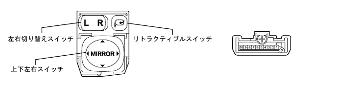

Outer Mirror Switch Assembly Inspection |
| 1. Inspect Outer Mirror Switch Assembly |
Resistance Inspection

Using SST (Toyota electrical tester), measure the resistance between each connector terminal when each switch is operated.
| Tester Connection (Terminal Symbol) | Condition | Standard |
|---|---|---|
| 6(M+) - 7(E) | Switch "Up" pressed | Below 1 Ω |
| 6(M+) - 8(B) | Switch "Down" pressed | Below 1 Ω |
| 6(M+) - 7(E) | Switch "Left" pressed | Below 1 Ω |
| 6(M+) - 8(B) | Switch "Right" pressed | Below 1 Ω |
| Tester Connection (Terminal Symbol) | Condition | Standard |
|---|---|---|
| 7(E) - 9(MR) 8(B) - 10(MF) | Driving position | Below 1 Ω |
| 7(E) - 10(MF) 8(B) - 9(MR) | Retracted position | Below 1 Ω |
| Tester Connection (Terminal Symbol) | Condition | Standard |
|---|---|---|
| 4(VL) - 8(B) 6(M+) - 7(E) | Switch "Up" pressed | Below 1 Ω |
| 4(VL) - 7(E) 6(M+) - 8(B) | Switch "Down" pressed | Below 1 Ω |
| 5(HL) - 8(B) 6(M+) - 7(E) | Switch "Left" pressed | Below 1 Ω |
| 5(HL) - 7(E) 6(M+) - 8(B) | Switch "Right" pressed | Below 1 Ω |
| Tester Connection (Terminal Symbol) | Condition | Standard |
|---|---|---|
| 3(VR) - 8(B) 6(M+) - 7(E) | Switch "Up" pressed | Below 1 Ω |
| 3(VR) - 7(E) 6(M+) - 8(B) | Switch "Down" pressed | Below 1 Ω |
| 2(HR) - 8(B) 6(M+) - 7(E) | Switch "Left" pressed | Below 1 Ω |
| 2(HR) - 7(E) 6(M+) - 8(B) | Switch "Right" pressed | Below 1 Ω |